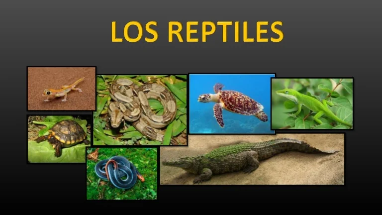

¿QUE SON LOS REPTILES?
Los reptiles son animales vertebrados que se caracterizan por desplazarse reptando. Es decir, arrastrándose por el suelo, como la serpiente, el cocodrilo, el lagarto o la tortuga. Ello es debido a que originalmente vivían en medios acuáticos. La evolución los ha llevado a adaptarse totalmente a la vida terrestre. Aún así, habitualmente habitan en zonas con presencia de agua (pantanos, lagos, orillas de los ríos, etc.).
